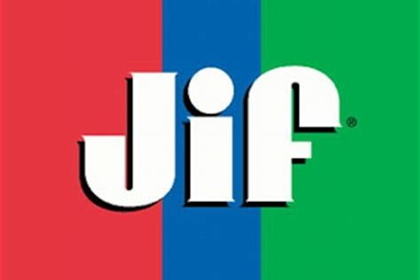

Business Analyst Intern - IS Sales, Marketing, and Growth
Final Intern Showcase 2022
ABOUT ME
BACKGROUND
I’m from the southtowns of Buffalo NY, where I grew up ski racing, raising chickens, and making maple syrup. Although I’m working as business analyst this summer, I am currently pursuing a double major in computer science and cognitive science. Specifially, I have been concentrating in data, databases, and artificial intelligence over the course of my education. I will be graduating from Case Western Reserve University in the spring of 2023 with a B.S. degree.
Last summer I worked as an IS intern for Velcro, based in Manchester NH. I worked in support services helping people with their daily technology issues and assisting on some larger projects like implementing company-wide multi-factor authentication.
SMUCKER EXPERIENCE
One thing that I really enjoyed about my Smucker internship was the structure and encouraged involvement. There were a number of opportunities offered to interns that really gave us a sense of what it would be like to be full time employees. The two summer-long offerings that I participated in were the ADDAPT ERG and the Dare to Lead Book Club.
In addition to long term involvement, we were also able to participate in a number of fun events and networking experiences. Some favorites included the IS baseball outing and volunteering at countryside farm.
This summer, I got to see what it was like to support the marketing side of the business from the 360One team. The 360One team focuses on creating a “360 degree” view of each consumer in order to market to them as an individual. As a business analyst on this team, I wrote requirements documentation and worked on testing some of the final products put out by the developers.
WHAT ARE REQUIREMENTS?
Requirements are important because they are a documented list of all the criteria that the final product put out by the developer must meet. This document grows and changes as we get more information, and as compromises are made between the business and the developers. Below are some of the projects that I worked on over the course of the summer.
MY PROJECTS

KEY LEARNINGS
As our internship is ending in the next few weeks, we were asked to think about some of the main things that we'd learned over the course of the summer. I found that my key learnings were pretty heavily rooted in improving my communication and leadership skills. Here are some of the things that I came up with:
Fetch Rewards
What is it?
The Fetch app partners with businesses such as Smucker to offer promotions and cash back on certain products. To take advantage of the deal, users just need to scan their receipt as proof of their purchase. When they do, all the data from their purchase gets ingested by Fetch and then sent over to us here at Smucker!
What did I do?
Fetch sends us all this information every day in 7 different files. As a result, the requirements for ingesting this data on our end were pretty extensive. One of my first projects was gathering information on the when, where, and how the data was being delivered, and then using that info to write that section of the requirements.
Besides the number of files, the other challenge with this project was the number of purchase data categories that we had access to. Due to some privacy laws, users have the right to know what data businesses are storing about them, as well as the right to have them delete that data upon request. In an effort to avoid making users uncomfortable by needlessly storing sensitive personal data, I went through the potential data categories and noted the ones that we would not want to ingest. I was then able to communicate with the Fetch team to determine an elimination method that would work on both our ends.
What was the result?
The Fetch pilot program will bring 250,000 additional consumers to the 360One ecosystem inclusive of receipt-level data that JMS digital marketers can use to tailor and personalize marketing communications with our consumers. That data will help JMS grow the brands and better retain them by using the data to drive more relevant content.
Browns Backers
What is it?
The Cleveland Browns have the largest active fan club in the NFL, the Browns Backers. This season, they’re hoping to expand to include the dogs of their fans in the “Barking Backers,” a dog fan club that will be sponsored by Milk-Bone. Participating dogs and their owners will receive a box of Milk-Bone goodies, as well as the option to sign up for the Milk-Bone email list. When a user chooses to sign up in this manner, the Browns need to send us the information that the user has provided in their signup for us to ingest so we can send them the marketing emails that they’ve requested.
What did I do?
This data ingestion project was particularly exciting because I got to handle writing all of the requirements documentation. It got a little bit complicated because the time frame was very limited, and the Browns declined to use our preferred method of sending over the user data. This gave me some pretty significant experience with asking the important questions, as well as learning about how different interactions with our business partners and 3rd parties can vary in ease of comunication.
What was the result?
The partnership between Milk-Bone the Cleveland Browns will allow consumers to receive marketing email messages from Milk-Bone as they sign up to be a Browns backer, which will assist in the digital marketing's goal of achieving 20M subscribers by the end of FY23. Although The estimated growth is small, this is the first initiative that starts to accumulate net new consumers for Pet outside of signups through the JMS website. JMS is breaking new ground with the Pet Team by having a partnership that helps us grow our database.
JIF Recall
What is it?
When JIF got recalled, consumer relations was flooded with calls and, later, with requests for coupons and reimbursement for the affected product. Everything with the recall was happening so fast and in such a huge volume of consumers that these requests were being tracked in an excel spreadsheet. This was not efficient or sustainable, so consumer relations asked IS to build a custom application to keep track of it all. The assembled team contained members from a variety of verticals and roles who came together to support the business during the recall.
What did I do?
This project was a huge learning experience for me. I sat in on meetings with both the dev team and the business and was able to learn from both sides as the application build progressed rapidly. This project was also where I learned the most about testing. I assisted our team’s resident test lead with creating an executing a detailed test plan.
What was the result?
Without the GREEF (General Recall Event Editing Form) app, we estimate that it would've taken Consumer Relations about 48 business weeks to sift through the coupon and refund requests. This was part of an effort that saved them approximately 38,000 hours of work.
ADDAPT ERG
What is it?
ADDAPT stands for Allies, Disabilities, and Diverse Abilities Partnering Together. It is meant to serve as an employee resource group that will provide support for disabled employees and caregivers to people with disabilities. The group aims to make the Smucker campus and culture more accessible to all by making physical changes and driving awareness of disability presentation in the workplace.
What did I do?
I first found out about ADDAPT through a presentation about the various ERGs that Smucker sponsors. As a disabled employee myself, I could tell that there was not any disability representation among the founding members of the group just based on the language that was used to describe the ERG. ADDAPT hadn’t launched yet, so I was able to lend them a disabled perspective as they made some significant edits to their charter.
What was the result?
This was an incredibly positive experience for me as a disabled employee. The charter is inclusive and contains a great initial plan of action and accountability. The group will be having its launch this October, and I’m personally very excited to see what they come up with so check it out!
Dare to Lead Book Club
What is it?
Dare to Lead is a book by Brenee Brown that explores how to be a daring leader by bringing your entire self into the workplace. The book club follows her workbook, leading participants in an examination of their team and their own workplace habits. Each week, we would read a certain number of pages and then meet to discuss what we’d read as a group. The intern edition of the book club features groups of all interns, as well as a few full-time employees as facilitators.
Feedback:
Being a part of the IS book club was an interesting and something experience. However, I think that some of the sections and material were definitely more applicable than others. A lot of the workbook activities were heavily centered around examining the practices and success of your team, and we had only been with a team for a short period of time at that point. I would recommend that the book club be focused around select chapters if interns continue to be included in the future. That way, interns get the most out of the Dare to Lead Experience and are able to have productive conversation in the book club meetings.
CAREER GOALS
DATA SCIENCE at JMS
I discovered through shadowing and meeting with a variety of people throughout the different verticals that I have an interest in data and data science. I think that a data science role would be a great fit for me both in terms of my interest and my qualifications.
This role aligns really well with my education and background. I am pursuing computer science with a concentration in data and databases, which will especially come into play in my classes in the coming two semesters. I have also heavily focused on studying machine learning while at achool, which is applicable to a role in data science as well.